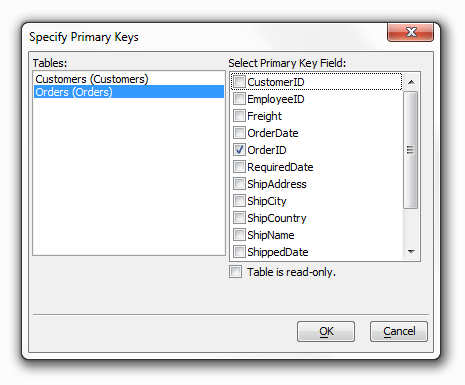

Creating a Grid for Microsoft Access Using the SQL Builder
Go to the Web Projects Control Panel and click the New button near the top left-hand corner of the dialog. Under the New File Dialog choose Web component > Next > Grid > Next to create a new grid component.
-
On the 'Select Grid Component Template' page select the 'Start with a blank Grid Component' radio button and click OK
The Grid Builder Dialog will open. Make sure the Design Tab is open.
Under the Grid Layout menu select the "Stacked Columnar" option. This produces a multi-record view that looks like multiple forms arrayed in a grid, with field labels above fields as show in the preview screen inside the design page.
Select the Updateable radio button.
Go to the Component Type tree menu on the Design page and under Grid click Data Source.
Select the SQL Database accessed via AlphaDAO (Alpha Data Access Objects) option.
Selecting the Records to Display
Display the Grid > Query (AlphaDAO) page.
Change the Connection Type to Specify Connection String. This will open the Create SQL Connection String Dialog box.
-
When the Create SQL Connection String Dialog box opens leave the Connection Type drop down at the top of the dialog set to Access.
In the Create SQL Connection String Dialog, click
 under the options menu to
select a file and navigate to the "Northwind" database in the MDB Filename field.
Click Open.
under the options menu to
select a file and navigate to the "Northwind" database in the MDB Filename field.
Click Open.-
Click OK to close the Create SQL Connection String Dialog.
Click Connect. This opens the Access database so you can select the table or view that you want to use.
Select the SQL Select Statement radio button.
-
Click the Edit SQL button to display the SQL Builder dialog box.
-
The SQL Genie should appear. Make sure the Tables tab is open.
-
Click Add Table to display the Add Table dialog box.
-
Select the "Customers (Table)" entry in the Tables list and click OK.
-
Click Add Table to display the Add Table dialog box.
-
Select the "Orders (Table)" in the entry in the Tables list and click Next, check the table is not joined button, and click Finish, then click OK.
- Under the Query page Click Select Primary Key(s) to display the Specify Primary Keys dialog box. Leave the Table is read-only check box empty.
- Select the "Customers" table from the Tables list.
- Check the "CustomerID" field.
- Select the "Orders" table from the Tables list.
- Check the "OrderID" field.
- Click OK to continue.


|
Selecting the Fields to Display
Display the Grid > Fields page.
Leave the Grid is editable check box unchanged. Although a grid starts out as updateable, it can still be read only. This has the virtue of using text boxes instead of labels to represent the data in the grid, which in turn provides more reliable formatting alternatives, as well as the ability to copy data from the fields.
In the Available Fields list select "Customerid" through "Orderdate" and click
 .
.
Display the Grid > Properties page.
Under the Layout Options menu click the
 button located on the Style Name Row. This will display the
Select Style dialog.
button located on the Style Name Row. This will display the
Select Style dialog.Under the Location menu on the Left side of the Select Style dialog select System. From the list of styles that appear select GrTan. You can add new styles or modify existing styles.
Change the Layout Options > Repeating columns field value to "4".
Change the Layout Options > Snaking style field value to "LRTB".
|
Change the Layout Options > Rows of data field value to "3".
Scroll down the long list of properties to the Record Navigator properties, you can collapse the lists of properties you are not interested in by clicking the minus sign next their title.
-
Click the
 button in the Record Navigator > Record navigator layout field to display the
Record Navigator Designer dialog box. You can modify the default navigator styles or create new navigator styles.
button in the Record Navigator > Record navigator layout field to display the
Record Navigator Designer dialog box. You can modify the default navigator styles or create new navigator styles. -
Select the Pre-Defined Format and click OK.
-
Change the Record Navigator > Record navigator position field to "Above and Below Grid".
-
Scroll back up the list of Properties until you come to the Customization properties. Click the
button in the
Customization > 'Total records' message text field to display the
HTML Editor. -
Display the Source tab.
-
Erase all the HTML code and click Save.
-
Scroll down the Properties list until you see the Freeform Edit Regions title. Click the
button in the
Freeform Edit Regions > Above Grid field to display the
Freeform Edit Regions Editor dialog. To the
right there will be an area to enter HTML. Click the HTML Editor
button if you would like more HTML tools to work with. -
Enter "Northwind Customer Orders" into the HTML editor, adjusting the format and font to your liking.
-
In the HTML Editor Click Save.
-
Click OK in the Freeform Edit Regions Dialog.
Go back to the Component Type tree menu on the left side of the Grid Builder and click the Grid > Update Settings page.
Uncheck the Permissions > Allow delete check box.
Change the Permissions > Number of new record rows to "1".
The first stage of previewing your work is to create a page onto which to place the new component.
Click
 to preserve your work. Name it "Access_SQL_Grid".
to preserve your work. Name it "Access_SQL_Grid".Click Close to return to the Web Projects Control Panel.
Click
 on the toolbar.
on the toolbar.Select A5W Page > Next and then Blank Page > Next open the HTML Editor.
Click File > Save As. Name the page "Access_SQL_Grid" and click OK.
The next stage is to place the component on the page.
Click
 Insert Component button to display the
Insert Component dialog. The button should
appear in the very top center of the Web Projects Control Panel.
Insert Component button to display the
Insert Component dialog. The button should
appear in the very top center of the Web Projects Control Panel.Click Select to display the Select Component dialog.
Select "Access_SQL_Grid" and click OK.
Change the component Alias in the Insert Component Dialog to "ASG" and click OK. This makes the code that Alpha Anywhere generates in the background more compact, but the main benefit is it allows you to transparently replace the component with another component with the same alias.
Click
and close the HTML Editor.Next, publish the files to the local webroot. The local webroot is presumably the location where you will test your website. In most cases you will create a second profile (in this case "AlphaSports") where you will publish your finished public website.
Display the A5W Pages page of the Web Projects Control Panel by clicking on 'A5W Pages' in the list on the left side of the panel.
Right click "Access_SQL_Grid" and select Publish (local webroot) and open. Click OK. You should see something like the following image displayed in you browser.
|
See Also